DZP · Financial services · Android
Fintech Android Application
Rethinking an ageing lending app, extending its functionality, and introducing a clearer visual hierarchy within the existing brand.
Overview
DZP is an Android lending app where customers can take out and prolong a loan, see payment history, understand and influence their credit rating, use an online calculator, and contact support.
I led interface redesign and refactoring, organized the design document, created icons and graphic elements, and established design-review collaboration with development.
Problem
The app had not been updated for a long time and was not delivering the desired revenue. The redesign needed to modernize the experience, close gaps with the web service, and introduce engagement mechanics without abandoning the brand.
The goals were a more accessible interface, missing web functionality on mobile, and gamification supporting engagement with new products.
Process
After prioritizing the backlog, I researched competitors, calculators, and physical control interfaces. I began with the online calculator—the app’s primary and most complex screen—and reduced yellow to an accent for priority actions.
The redesign expanded through navigation, loan status, notifications, payments, prolongation, profile, document verification, transaction history, and credit rating. Close work with the Android developer shaped complex screens for implementation.
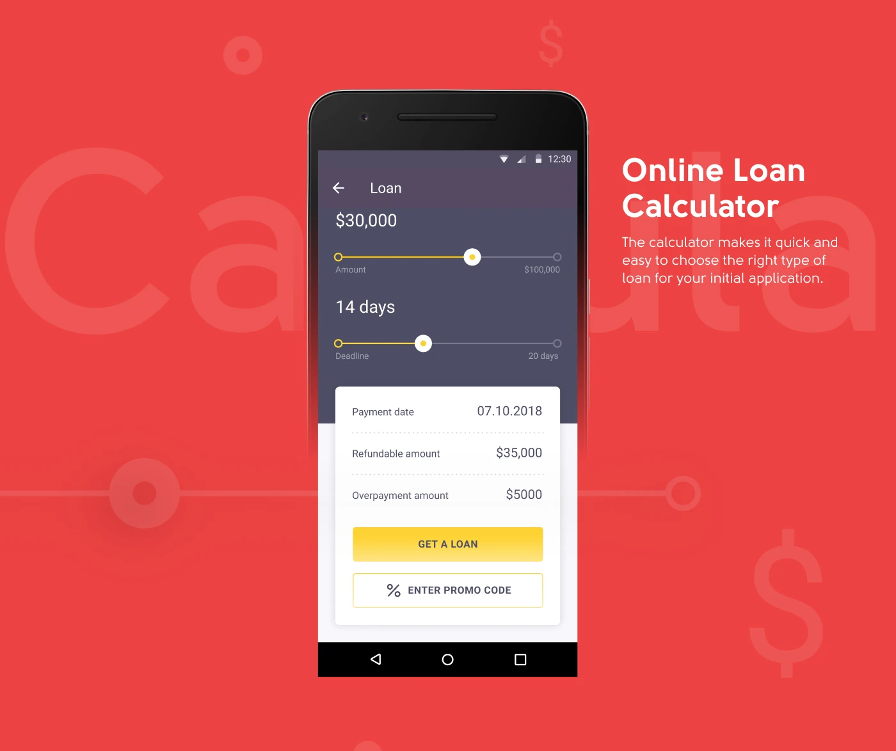
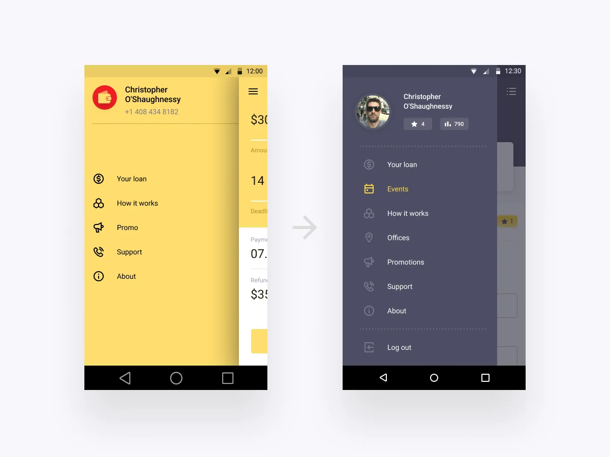
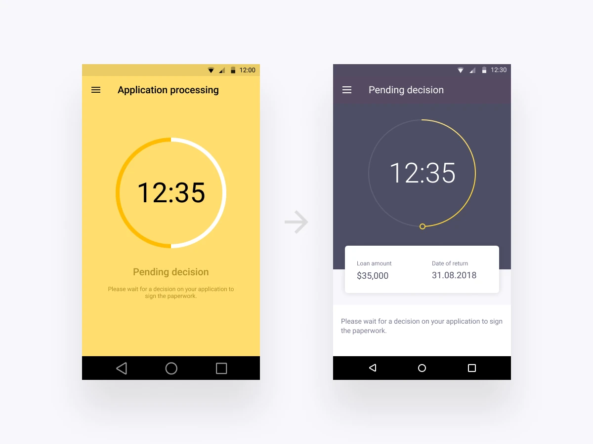
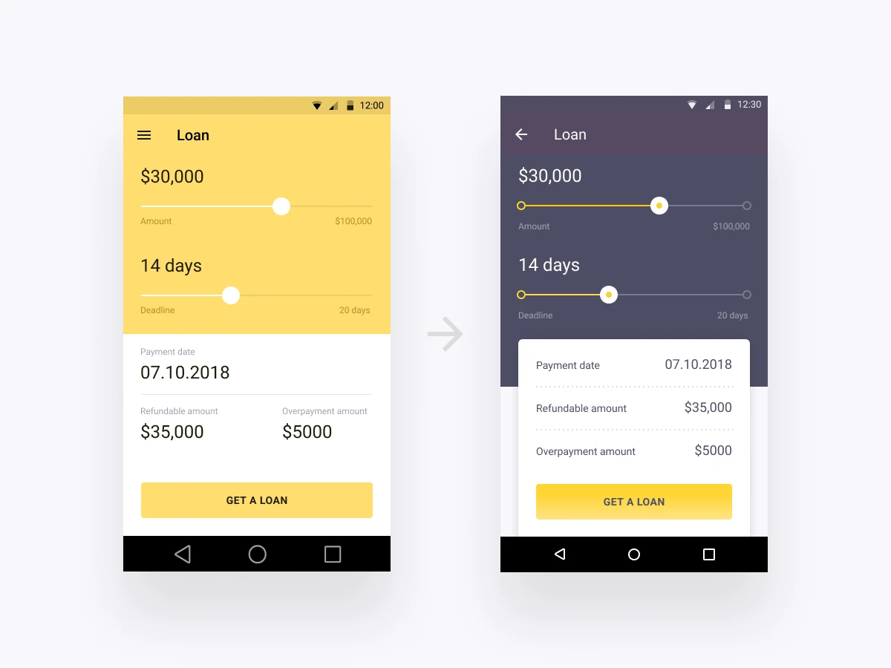
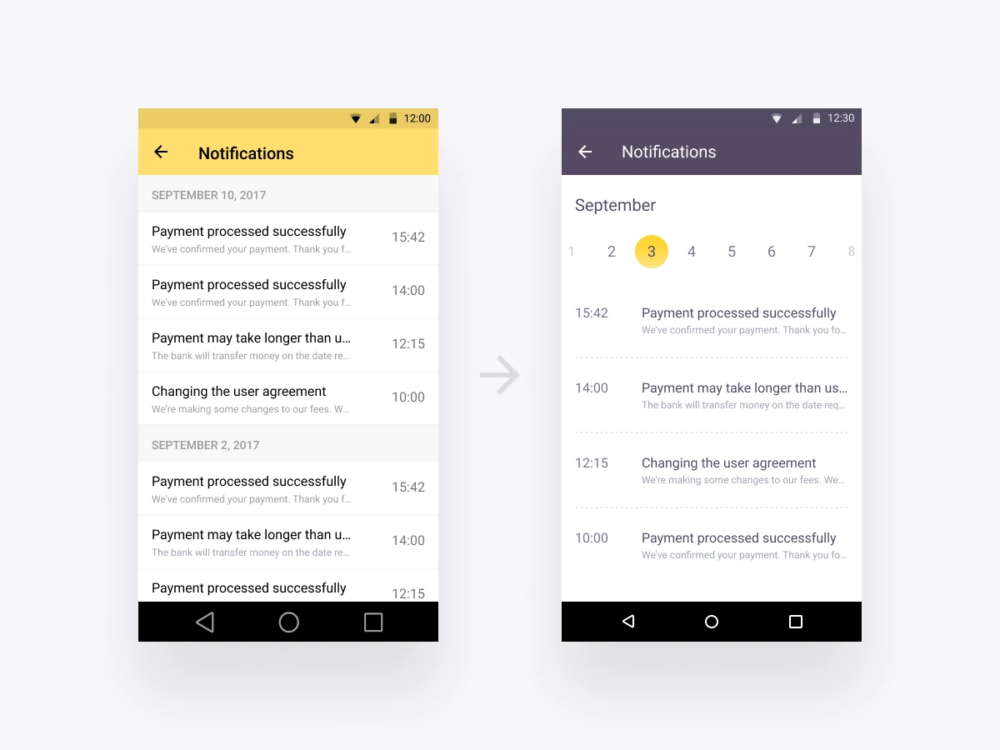
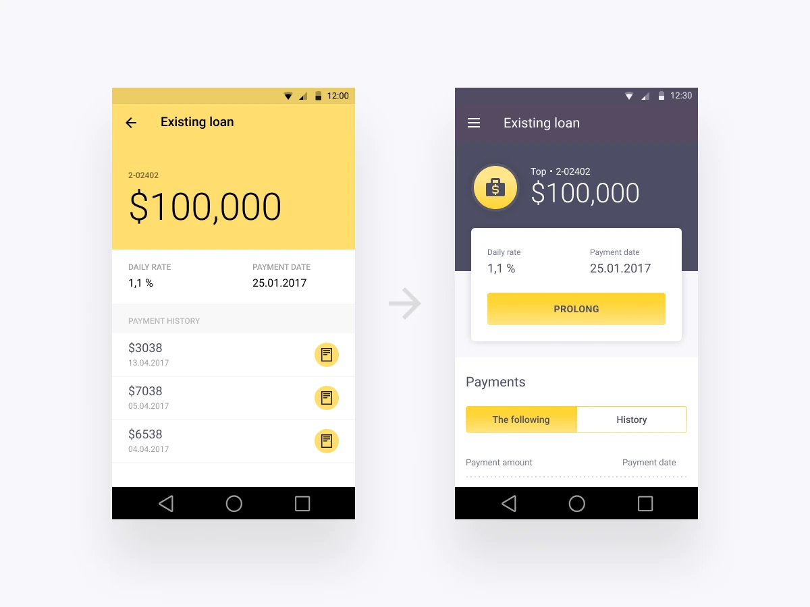
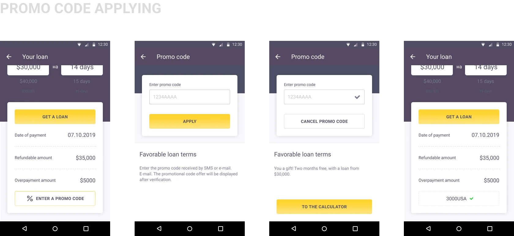
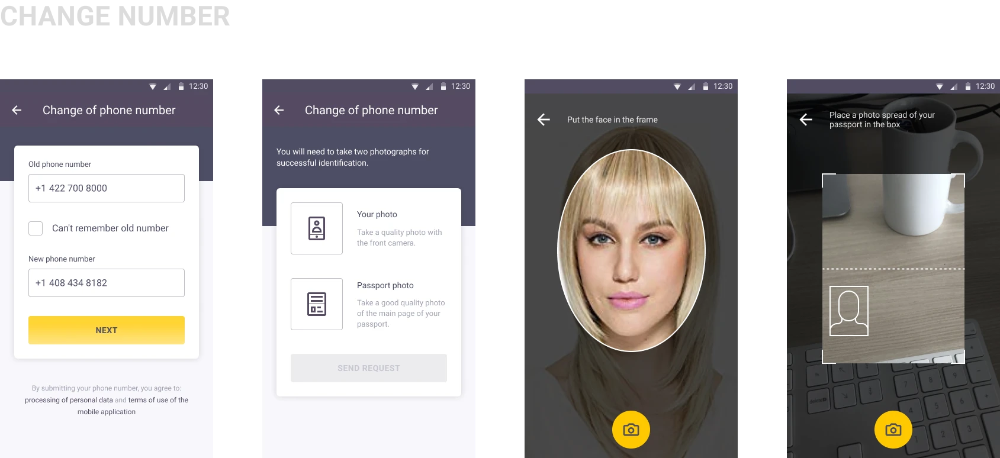
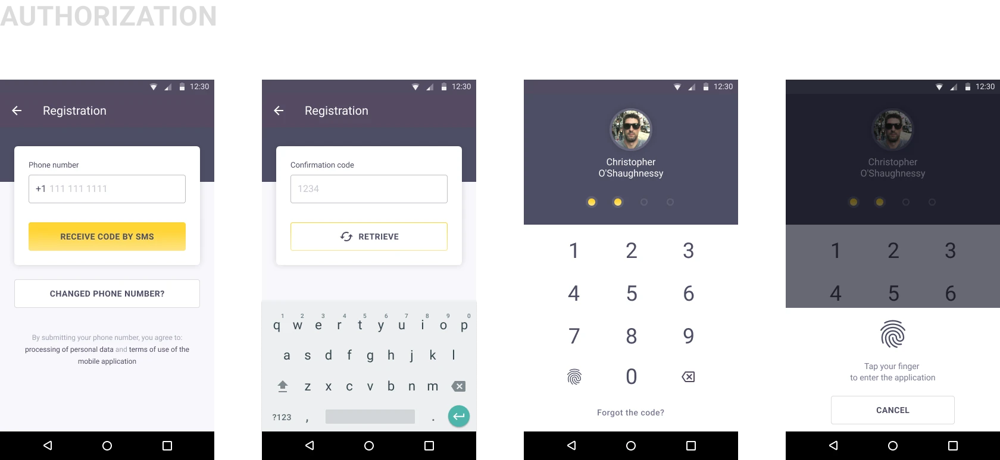
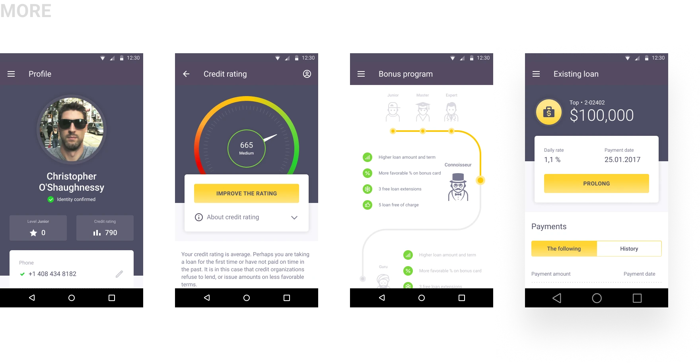
Outcome
The redesign and new functionality were delivered on time. Stakeholders approved the updated product, key business metrics improved, and store ratings increased.
The project gave me deep Android-design experience, strengthened development collaboration, and taught me to use user-flow mapping to find logical conflicts and missing states.
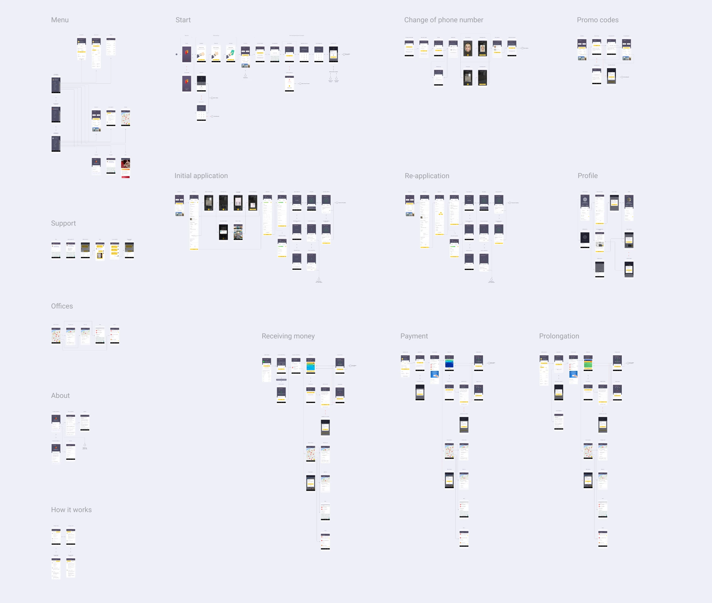